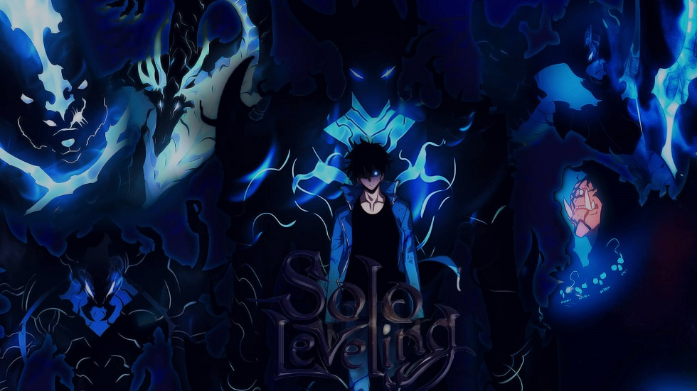

Season 2

Solo Leveling (나 혼자만 레벨업) is a Korean web novel written by Chu-Gong (추공). It was first serialized by Papyrus on November 4, 2016 and ended with 14 volumes and 270 chapters. On April 13, 2018, a webtoon serialization was released on KakaoPage, drawn by artists Gi So-Ryeong (기소령) and Jang Sung-Rak (장성락). It officially concluded on December 29, 2021 with 179 chapters released. A spin-off webtoon series based on the web novel's side stories was launched roughly 13 months later on January 20, 2023 and ended on May 31st, 2023, with 21 chapters released.
In a world where hunters, human warriors who possess magical abilities, must battle deadly monsters to protect mankind from certain annihilation, a notoriously weak hunter named Sung Jinwoo finds himself in a seemingly endless struggle for survival. One day, after narrowly surviving an overwhelmingly powerful dungeon that nearly wipes out his entire party, a mysterious program called the System chooses him as its sole player and in turn, gives him the extremely rare ability to level up in strength, possibly beyond any known limits. Follow Jinwoo's journey as he fights against all kinds of enemies, both man and monster, to discover the secrets of the dungeons and the true source of his powers.
Content Advisory: Blood/Gore, Violence
Genres: Action, Adventure, Fantasy
Solo Leveling (나 혼자만 레벨업) is a Korean web novel written by Chu-Gong (추공). It was first serialized by Papyrus on November 4, 2016 and ended with 14 volumes and 270 chapters. On April 13, 2018, a webtoon serialization was released on KakaoPage, drawn by artists Gi So-Ryeong (기소령) and Jang Sung-Rak (장성락). It officially concluded on December 29, 2021 with 179 chapters released. A spin-off webtoon series based on the web novel's side stories was launched roughly 13 months later on January 20, 2023 and ended on May 31st, 2023, with 21 chapters released.
In a world where hunters, human warriors who possess magical abilities, must battle deadly monsters to protect mankind from certain annihilation, a notoriously weak hunter named Sung Jinwoo finds himself in a seemingly endless struggle for survival. One day, after narrowly surviving an overwhelmingly powerful dungeon that nearly wipes out his entire party, a mysterious program called the System chooses him as its sole player and in turn, gives him the extremely rare ability to level up in strength, possibly beyond any known limits. Follow Jinwoo's journey as he fights against all kinds of enemies, both man and monster, to discover the secrets of the dungeons and the true source of his powers.